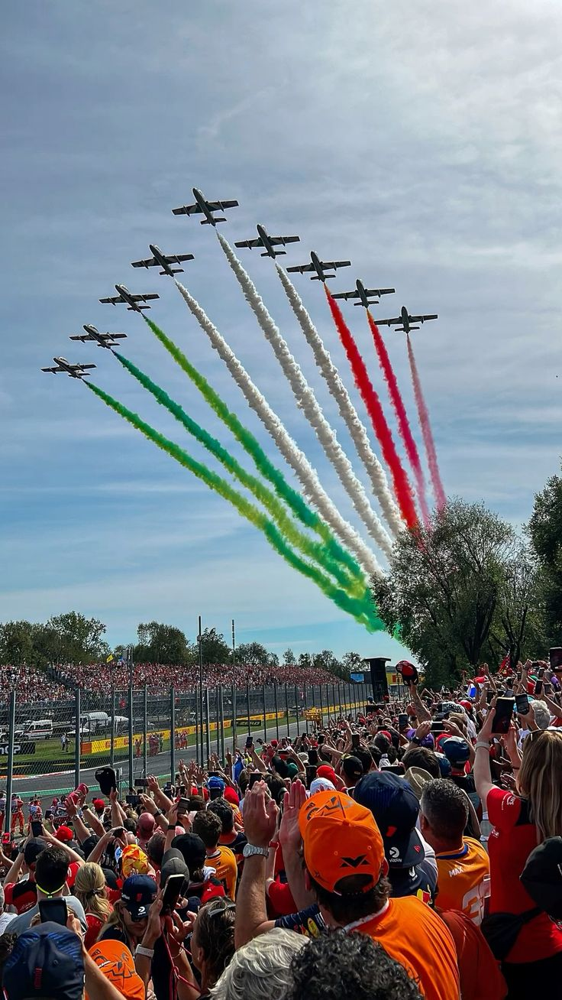
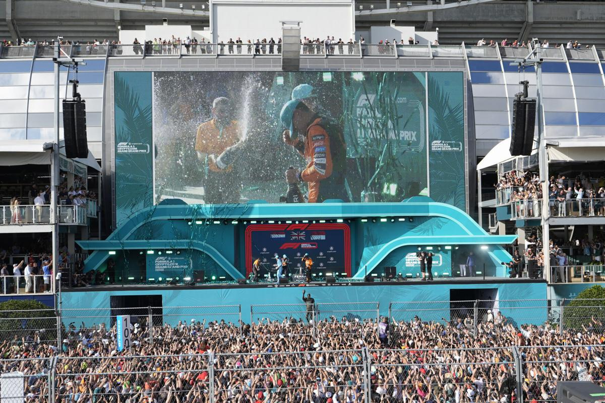
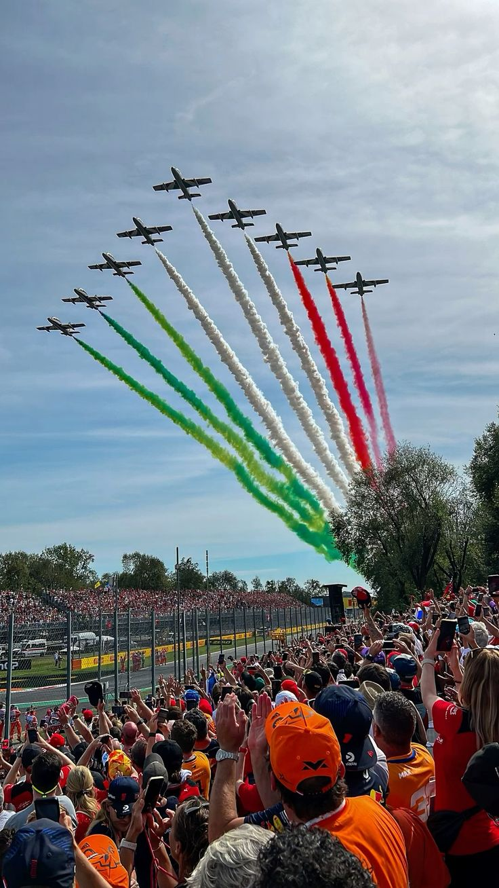
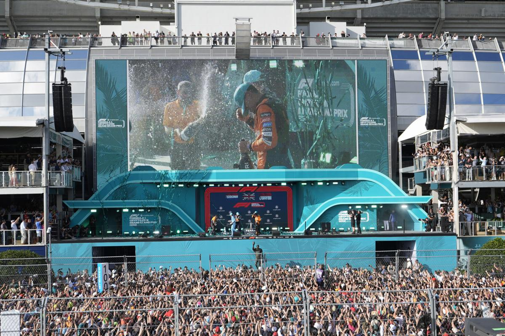

Formula 1
Formula 1 is the pinnacle of motorsport, where cutting-edge technology meets high-speed excitement. With races held on some of the world’s most iconic circuits, F1 brings together the best drivers and teams in a battle for glory, pushing the limits of what’s possible in racing.
Join the Community
At Formula Diaries, we offer a vibrant platform for fans to connect, share, and stay updated on all things Formula 1. Join our community to read and write fan blogs, and stay informed with the latest news. Dive deep into driver facts and enjoy a hub where your passion for formula racing can thrive.
Question of the Month: Why do you love formula 1?
“The emotions behind every race and driver, that's one thing to love, but mostly the passion of every driver in every race.”
“It‘s all about lovely people, fans, engineers, drivers and more who share the same passion.”
“It's full of passion from all sides - drivers, teams, fans - and while there's rivalry there's also respect. You learn to expect the unexpected on a race weekend, which makes for intrigue and excitement. Plus the drivers I've met have been lovely and had time for their fans.”
“The speed and beauty of the cars, the bravery of the drivers, the history and the heroes but most of all the work done by the whole team”
Submit Your Response
Our Favorite Fan Taken Pictures:
 


